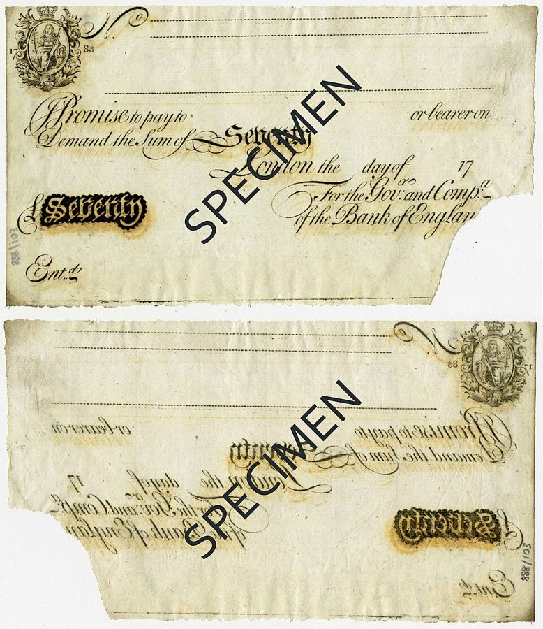
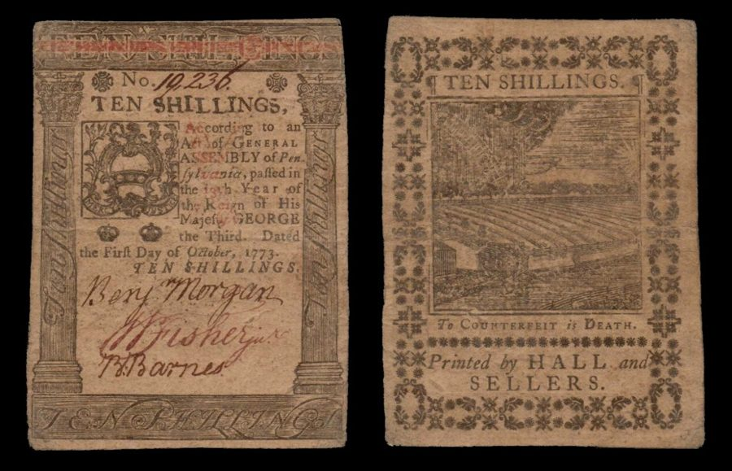

这一页在做什么
卷一第 4 章讲了金属铸币，这一章讲纸币和银行。斯密想说服读者：拿便宜的纸换下昂贵的金银，一国能腾出一大笔资本，苏格兰就靠遍地开银行得了好处；可银行也会闯大祸。章里有一场就发生在他眼前的灾难：一家银行开张两年多就倒了，股东里有他的学生。读的时候抓两条线：银行凭什么只留一点金银，就能发出多得多的钞票；斯密给银行定的规矩，哪些今天还对，哪些被后来的中央银行改写了。

他想证明什么
这一章很长，要证明的是两件事。第一，钱是流通的「大轮子」，一国的收入是钱能买到的东西，不是那几枚金币；所以用纸币换下金银，就像工厂换上更省钱的机器：省下的金银运到国外，换回原料、工具和口粮，能多养活干活的人。苏格兰二三十年里大小城镇都开了银行，就是他的例证。第二，纸币有个限度：不能超过没有纸币时国内本该流通的金银，多发的会马上回来挤兑。所以他给银行立规矩：只贴现真实的汇票，现金账户要看还款跟不跟得上，长期的钱别借。接着拿一家两年多就倒闭的银行说明不守规矩的下场。最后他主张禁止小额钞票、钞票必须见票即兑，此外银行业可以完全自由。
读法：这一页没有标先读的节，银行细账不是全书的主线。有空就挑三个故事看：§4 爱丁堡商人的现金账户，§6 循环出票和艾尔银行，§7 第 86 段的「空中车道」。§1 是总收入和纯收入的账，§5 是银行该借多少的细则，都可以跳过。
斯密说，银行只要只贴现「真实的汇票」，发出的纸币就不会过多。这后来叫「真实票据原则」，经济学家早就指出它管不住货币的数量，见「今天怎么看」。
斯密落在哪：最明智的银行业不增加一国的资本，却让闲着的「死资本」动起来；但纸币要有限度，银行只该做短期的、有真实买卖撑着的放款；只要禁止小额钞票、钞票见票即兑，银行越多，公众越安全。
分节地图
这一页是卷二第 2 章，本站切成 8 节。粗体是本站起的节名；「杨译里找」后面是杨译里这一节开头附近的小标题或第一句；灰色的英文是原文这一节开头的几个词。标「先读」的是最短读法。
- 总收入和纯收入价格分为三部分：工资、利润和地租IT has been shewn in the first …总收入、纯收入，维持机器和钱的费用怎么扣，是抽象的账。结论在第 11 段一句：流动资本里只有钱的维持费会减少一国的纯收入。可以跳过。
- 流通的大轮子不是收入只是由于文字暧昧，才显得可疑It is the ambiguity of language only …钱是流通的「大轮子」，不是收入：每周领一个基尼的人，收入是这枚金币能买到的东西。第 18–19 段的例子最清楚，卷四驳重商主义的伏笔在这里。
- 纸币省下的金子去了哪里用纸币代替金币是一种改进The substitution of paper in the room …银行发 10 万镑钞票只留 2 万镑金银，国内用不了的金银流到国外，换回原料和工具。全章的核心机制，第 29–30 段读懂就够。
- 苏格兰的银行和现金账户这种银行业务已在苏格兰实行，效果特别显著An operation of this kind has, within …第 41 段格拉斯哥贸易翻番是斯密「听说」的，他自己说不敢断定；第 44–46 段的现金账户，和爱丁堡、伦敦两个商人的对比，最好看。
- 银行能借出多少银行的特殊支出有：（1）保持及（2）补充货币资财以偿付银行券Over and above the expences which are …补库存的成本、英格兰银行铸币亏本、银行该借多少。结论在第 58–59 段的真实票据原则，今天看站不住，本页「今天怎么看」替你讲了，可以跳过。
- 循环出票和艾尔银行的倒闭25年多以前，苏格兰纸币已达到适当的数额It is now more than five-and-twenty years …斯密专门给「不是生意人的读者」讲循环出票，再讲一家新银行怎样两年多就倒了。第 67 段疲倦旅人的比喻、第 74–75 段事与愿违的结局最好看。
- 英格兰银行和空中车道英格兰银行于1694年设立The bank of England is the greatest …英格兰银行的股本细账可以略过，看第 85 段「国家的大引擎」和第 86 段：银行像「空中的车道」，工商业却悬在纸做的翅膀上。
- 小额钞票、殖民地纸币和银行自由流通可分为商人之间的和商人与消费者之间的The circulation of every country may be …第 94 段拿防火墙为管制辩护，第 100 段北美殖民地的纸币，第 106 段全章结论。中间讲任选条款、约克郡小钞和阿姆斯特丹的几段可以略读。
先用中文过一遍：这一页的概念
这一页用到的两个概念。讲的是概念本身；每块的「今天」说今天怎么看它。
§3部分准备金 fractional reserve
银行发出的钞票（今天是存款），远多于它库里实际留着的现金。能这样做，是因为持有人不会同时来兑：天天有人来兑，也天天有人把钱存回来，银行只要留够应付平常进出的那一部分。斯密的例子：一个银行家借出 10 万镑自己的钞票，库里留 2 万镑金银，「常常」就够了。借出去的钞票照样收利息，这就是银行的赚头。反过来，要是大家同时来兑，再稳的银行也拿不出全部现金，这就是挤兑。书里没有「部分准备金」这个词。
今天：商业银行仍是这样，只是存款兑的是央行发的钱，不是金银。美国 2020 年已把法定准备金率降到零，管住银行放贷的主要是资本要求和央行利率；挤兑则靠存款保险和央行兜底来挡。
在这一页：§3 第 29 段立下这个算法；第 48 段说多发的钞票会回来挤兑；第 106 段说银行一多，各家都得更小心。
§5真实票据原则 real bills doctrine
斯密给银行定的放款规矩：只贴现「真实的汇票」，就是一个真债主开给一个真欠债人、背后有一笔真买卖、到期一定有人付的短期汇票。他的道理是：这样放出去的钱，只是替商人垫上他本来要压在柜里备用的那点现金；汇票一到期，钱就流回银行，银行的金库像一个有进有出的水池，不用操心自己就满着，钞票也就不会超过没有纸币时国内本该流通的金银。译本：「真实的汇票」，「真实票据原则」这个名字是后人起的，书里没有。
今天：「真实」管不住总量：放款一多，物价上涨，汇票的面额跟着变大，照规矩又能多贴现。斯密那里真正的闸，是钞票见票即兑。今天的央行看通胀和就业，不看票据真不真。
在这一页：§5 第 58–59 段提出，第 60–63 段讲现金账户怎样守同一条线；§6 那家新银行就倒在几乎不分真假汇票上。
故事和背景
这一页里的故事和 18 世纪的东西，按在书里出现的顺序排。
§4爱丁堡商人的信用额度
苏格兰的贸易小，银行光靠贴现汇票没多少生意，于是发明了「现金账户」（cash account）：找两位有地产、信用可靠的人作保，银行就给你一个额度，比如两三千镑，随用随借，借了可以一二十镑零碎地还，还上多少，就从那天起少算多少利息。斯密说这种信用他相信各地银行都有，但这么宽松的还法，「据他所知」是苏格兰独有的。这就是今天的透支额度。苏格兰皇家银行说，第一位拿到的是 1728 年爱丁堡商人 William Hog，额度一千镑，那时这家银行才开张一年。第 46 段斯密拿两个本钱一样的商人比：伦敦那位得在柜里常压 500 镑现金备付货款，库里的货就少 500 镑，雇的人也少；爱丁堡那位用现金账户应付，不压闲钱，能多存货、多雇人。
§6疲倦的旅人：循环出票
第 66 段斯密停下来说，这本书会落到许多不是生意人的人手里，所以要讲清楚「循环出票」（drawing and re-drawing）。爱丁堡的 A 向伦敦的 B 开一张两个月期的汇票，B 其实不欠 A 什么，只是说好：到期前他再向 A 开一张同样数目、加上利息和佣金的汇票。两人你开我、我开你，有时一连好几年，每张都拿去银行贴现，银行垫出去的钱其实从没收回来。利息一年 5%，每开一道佣金不少于 0.5%，一年转六次以上，这笔钱的成本超过 8%，而一般认为做生意的普通利润在 6% 到 10% 之间（利息和利润的关系见页 06 的利息和利润）。汇票为什么敢这样收？第 67 段说，汇票到期不付，付款人当场算破产，期限又短，几个签名的人哪怕都靠不住，也未必刚好一起垮。斯密打了个比方：疲倦的旅人对自己说，这房子摇摇欲坠，撑不了多久；可未必就塌在今晚，今晚我就睡这儿吧。
§6要救国的银行，救了它的对手
书里没点名，Cannan 据索引补出：这是 1769 年在苏格兰西南的艾尔开张的 Douglas, Heron & Co.，人称艾尔银行。一百多位股东多是大地主，有巴克卢公爵、昆斯伯里公爵；巴克卢公爵是斯密当年的学生。它开张就为「解救国家的困难」，开现金账户、贴现汇票都比谁都慷慨，几乎不分真汇票和循环汇票，还肯为回本最慢的土地改良垫上全部资本。钞票一发出去就回来兑现，它只好不停向伦敦开汇票补库，四分之三以上的生意每笔亏 3% 多。股东拿全部地产担保它的债，它才撑了两年多：1772 年 6 月，伦敦一家银号倒闭引起恐慌，它跟着停兑。斯密那年在信里说，他最关心的几位朋友深陷其中。Cannan 还说，1778 年股东的调查报告证实斯密的叙述「极其准确」。
§8十五年后才兑现的一百镑
第 100 段讲北美殖民地的纸币。它们不是见票即兑的银行券，而是殖民地政府发的、要过好几年才兑现的纸，不付利息，却硬定为法定的偿债手段（legal tender），债主不收也得收。斯密算了一笔账：利率 6% 的地方，十五年后才付的 100 镑，眼下只值 40 镑出头。他引「诚实直率的道格拉斯医生」的话说，这本是欠债的人骗债主的诡计。照汇价看，有的殖民地 100 英镑能换 130 镑当地纸币，有的要换 1100 镑。1764 年英国议会立法，殖民地今后发的纸币不得作法偿，斯密说没有比这更公平的法律，殖民地却怨声不断。他单独夸了宾夕法尼亚：发纸币一向最有节制。

原典：斯密的原话
这本书是公版书，下面整段放斯密的原文，配本站的白话译。灰字说它在杨译的哪里，最后一行是这段里今天容易读错的 18 世纪词。
§6想救国，结果救了对手
艾尔银行的结局，斯密最冷静的一段挖苦。省掉了中间几句。在杨译银行的行为和失败加重了计划人和国家的困难那个小标题附近。
The operations of this bank seem to have produced effects quite opposite to those which were intended by the particular persons who planned and directed it. … This bank, no doubt, gave some temporary relief to those projectors, and enabled them to carry on their projects for about two years longer than they could otherwise have done. But it thereby only enabled them to get so much deeper into debt, so that when ruin came, it fell so much the heavier both upon them and upon their creditors. … The temporary relief, however, which this bank afforded to those projectors, proved a real and permanent relief to the other Scotch banks. … In the long-run, therefore, the operations of this bank increased the real distress of the country which it meant to relieve; and effectually relieved from a very great distress those rivals whom it meant to supplant.
本站译：这家银行的所作所为，产生的效果似乎和策划、主持它的那些人的本意正好相反。……这家银行无疑给了那些搞计划的人一点暂时的喘息，让他们的计划比本来多撑了大约两年。可这样只是让他们欠债欠得更深，等到垮台那天，砸在他们和他们的债主头上的，也就更重。……然而，这家银行给那些搞计划的人的暂时喘息，对苏格兰别的银行却成了一次真正的、长久的解救。……所以，长远看，这家银行的作为，加重了它想去解救的那个国家的实际困难；它想挤掉的那些对手，倒被它实实在在地从一场大难里救了出来。
省掉的几句说：老银行越来越不肯贴现循环汇票，做这种汇票的人就全涌到新银行，「受到张开双臂的欢迎」，老银行于是轻轻松松跳出了那个「要命的圈子」。斯密用的是 seem：他说的是效果和本意相反，没说策划的人存心坑人。
- projectors搞计划、办新事业的人，在斯密笔下常带「好大喜功、不切实际」的贬义。译本：「计划人」
- distress困境，这里指周转不灵、借不到钱
- supplant挤掉、取而代之
§7空中的车道，纸做的翅膀
全章最有名的一段：先说银行的好处，紧接着说它的风险。在杨译银行业的运作，将死资财变成生产性资本那个小标题附近。
It is not by augmenting the capital of the country, but by rendering a greater part of that capital active and productive than would otherwise be so, that the most judicious operations of banking can increase the industry of the country. … The gold and silver money which circulates in any country may very properly be compared to a highway, which, while it circulates and carries to market all the grass and corn of the country, produces itself not a single pile of either. The judicious operations of banking, by providing, if I may be allowed so violent a metaphor, a sort of waggon-way through the air; enable the country to convert, as it were, a great part of its highways into good pastures and corn-fields, and thereby to increase very considerably the annual produce of its land and labour. The commerce and industry of the country, however, it must be acknowledged, though they may be somewhat augmented, cannot be altogether so secure, when they are thus, as it were, suspended upon the Dædalian wings of paper money, as when they travel about upon the solid ground of gold and silver.
本站译：最明智的银行业务能增进一国的产业，靠的不是增加这个国家的资本，而是让这份资本里更大的一部分动起来、生出东西，不然它就闲着。……一国流通的金银钱币，很可以比作一条大路：全国的草和谷物都靠它流通、运到市场上去，它自己却一根草、一粒谷也长不出来。明智的银行业务，提供了一种，请允许我用这么出格的比喻，空中的车道，好比让国家把大部分大路改成好牧场、好麦田，一年从土地和劳动里得到的产物也就多了许多。不过得承认，一国的商业和产业，虽然这样或许能多出一些，可像这样好比悬在纸币的代达罗斯之翼上，总不如走在金银的坚实地面上那样安全。
代达罗斯是希腊神话里的巧匠，用蜡和羽毛给自己和儿子伊卡洛斯做了翅膀，逃出克里特；伊卡洛斯飞得太高，蜡被太阳晒化，掉进海里。斯密接着说，有些意外驾驭纸币的人再高明也防不住，下一段就举了一种：打了败仗、首都被占，全靠纸币流通的国家会乱得多。
- Dædalian代达罗斯的：既指精巧，也让人想起那对会化的蜡翅膀。译本：「错综复杂的双翼」，警告的意思就没了
- waggon-way车道，当时矿上铺了木轨、跑运货车的路
- dead stock（这段省掉的部分）死资本：闲着、不生利的钱
§8防火墙
常被忽略的一段：斯密明说，为了整个社会的安全，自由可以限制。整段。在杨译禁止小额纸币的法律会侵犯社会安全所必要的天然自由那个小标题下面。
To restrain private people, it may be said, from receiving in payment the promissory notes of a banker, for any sum whether great or small, when they themselves are willing to receive them; or, to restrain a banker from issuing such notes, when all his neighbours are willing to accept of them, is a manifest violation of that natural liberty which it is the proper business of law, not to infringe, but to support. Such regulations may, no doubt, be considered as in some respect a violation of natural liberty. But those exertions of the natural liberty of a few individuals, which might endanger the security of the whole society, are, and ought to be, restrained by the laws of all governments; of the most free, as well as of the most despotical. The obligation of building party walls, in order to prevent the communication of fire, is a violation of natural liberty, exactly of the same kind with the regulations of the banking trade which are here proposed.
本站译：也许有人会说：私人自己愿意收一个银行家的本票，不论数目大小，却不许他们收；或者银行家的邻居都愿意接受他的钞票，却不许他发；这明明是侵犯天然自由，而法律的本分是维护这种自由，不是侵犯它。这样的规定，无疑可以在某种意义上看作侵犯天然自由。可是，少数人行使天然自由，要是可能危及整个社会的安全，那么一切政府的法律，不论最自由的还是最专制的，都在限制、也应当限制。强制人们砌界墙、防止火势蔓延，就是侵犯天然自由，和这里提议的银行业管制正是同一类。
这里提议的管制，是第 91 段说的「也许」最好不准发五镑以下的钞票。1826 年英国立法，不准在英格兰再发五镑以下的钞票；要推到苏格兰时，小说家司各特化名连写三封信抗议，苏格兰保住了小额钞票。苏格兰皇家银行的一镑钞票至今仍算在流通。
- natural liberty天然自由：法律没拦着时人本来能做的事，见页 22
- party walls相邻两座房子之间的共用界墙，这里是防火墙
- despotical专制的
今天怎么看
这一章的主要说法和今天的判断。每条标签判的是那条论点，五种标签的意思：
- 成立今天的经济学和证据支持这句话。
- 部分成立大方向对，细节或适用范围要改。
- 过时说的是 18 世纪的世界，当时也许对，今天的制度和技术已经变了。
- 被推翻后来的经济学或证据说明它错了。
- 有争议经济学界至今没有定论，两边各有代表性的研究。
银行只留一部分金银，就能发出多得多的钞票；可一旦人心慌了，挤兑会越挤越凶
第 29 段：10 万镑钞票留 2 万金银「常常」就够；第 48 段：银行一显出为难，惊慌会让挤兑更凶。今天看，两半都对：部分准备金仍是银行的底子；Diamond 和 Dybvig 1983 年的模型说明，挤兑可以自己成真，人人怕别人先取，就都去取。2023 年 3 月 9 日，硅谷银行一天里被要求取走约 420 亿美元，第二天就被接管。
§3 第 29 段、§4 第 48 段银行只贴现真实的汇票，发出的纸币就不会超过国内流通所需
第 58–59 段：这样放的钱只替商人垫上备用的现金，到期就流回来。今天看，单靠「真实」两个字管不住货币的数量，物价一涨，票据跟着变大；斯密那里真正起作用的闸是见票即兑，见下面的卡。
§5 第 58–59 段银行业不增加资本，却能让闲着的钱动起来；代价是工商业悬在纸翼上，没那么稳
第 86–87 段。今天看，两半都有研究撑着：King 和 Levine 1993 年用 80 个国家 1960–1989 年的数据发现，金融越发达的国家后来长得越快；Schularick 和 Taylor 2012 年用 14 国 1870–2008 年的数据发现，信贷猛涨是金融危机最好的预警之一。
§7 第 86–87 段禁小额钞票、钞票见票即兑以外，银行业可以完全自由，银行越多越安全
第 106 段：对手多了，各家怕被恶意挤兑，更小心，一家倒了波及也小。今天看，各国走了另一条路：由中央银行独占发钞、危机时兜底，再加存款保险。斯密说的那种自由银行在苏格兰试过，算不算成功，至今两边都有人，见下面的看法。
§8 第 106 段书里的说法：银行只贴现真实的汇票，发出的纸币就不会超过国内流通所需
- 书里
- 第 58–59 段。斯密其实设了三道闸：只贴现有真买卖撑着的短期汇票；现金账户要看几个月里还的跟借的是否一样多（第 60–63 段）；钞票必须见票即兑，多发的会回来挤兑（第 48 段）。他还说银行不该借长期的钱（第 64 段）。
- 当时
- 那是金银本位，钞票随时能换金币，多发的真会被拿回来兑走金银，第三道闸是实在的。
- 今天
- 单靠「真实」管不住数量。Thornton 1802 年指出：只要贴现利率低于做生意的利润率，商人总有理由多借；钱多了物价涨，汇票面额跟着变大，照规矩又能多贴现，一圈圈往上。英国 1797–1821 年停止兑现，钞票没了第三道闸，李嘉图等人把物价上涨归到多发的钞票上。1913 年美国设联储，法律让它主要贴现「真实商业交易产生的」票据；Friedman 和 Schwartz 1963 年认为，这套想法让联储在大萧条时坐看货币收缩。今天的央行盯通胀和就业，不看票据真不真；「借短不借长」的谨慎，倒仍是银行的常识。核对于 2026-10。依据：Humphrey, The Real Bills Doctrine, FRB Richmond Economic Review, 1982；12 U.S.C. §343。
- 另一边
- Sargent 和 Wallace 1982 年在模型里给它翻过一点案：放手让银行按真实票据放款，物价波动更大，按福利标准却未必更差。
银行越多，越安全吗
主流看法：英国 1844 年《银行特许法》把发钞权逐步收归英格兰银行，苏格兰 1845 年另立法，现有银行照发、不再添新的；Bagehot 1873 年在《伦巴第街》里主张危机时央行要敞开放贷。后来又有了存款保险和资本要求。
斯密的看法：第 106 段：只要禁小额钞票、钞票见票即兑，银行业别的方面「可以完全自由」，对公众安全无碍；银行一多，反而更安全。
本站的评论：苏格兰正是斯密说的那种实验。Lawrence White 1984 年认为它相当成功：各银行每周互相交换对方的钞票结账，谁多发谁先被兑走金银，没有央行也挺稳。Cowen 和 Kroszner 1989 年反驳：小额钞票、新银行进入都受法律限制，英格兰银行实际上是它背后的「影子央行」，算不上放任自由的样板。还有一处今天不能照搬：艾尔银行的股东拿全部地产赔，今天银行的股东只赔到股本为止，冒险的激励大不一样。
本站的总体看法：这一章挑着读：§4 的现金账户、§6 的艾尔银行、§7 的空中车道，都是好故事。部分准备金和挤兑，斯密讲得今天仍对；真实票据原则别学，它后来带歪过不少人；要不要银行自由竞争，至今还在争。
精彩回顾
隔几周回来时看这里。想不起来，点节号回到那一节。
一句话：银行让闲着的金银动起来，可工商业从此悬在纸做的翅膀上。
银行只留一部分金银备兑，就能发出多得多的钞票；多发了或人心慌了，就会被挤兑。
§31769 年开张的艾尔银行想救国，什么汇票都贴现，两年多就倒了；它多撑的两年让借钱的人越陷越深，倒让老银行脱了身。
§6金银像大路，自己不长庄稼；银行像空中的车道，让大路改成麦田。代价是工商业悬在代达罗斯的纸翼上。
§7斯密说，危及社会安全的个人自由，最自由的政府也该限制，就像强制砌防火的界墙。
§8